Đây là dự án phân tích rủi ro tín dụng được xây dựng trên bộ dữ liệu với 2,260,701 khoản vay của Lending Club trong giai đoạn 2007–2018. Quá trình phân tích được khai thác trên 8 module, mỗi module thực hiện việc đánh giá tình trạng của từng danh mục. Sau đó xây dựng mô hình dự đoán xác suất vỡ nợ PD cho từng khoản vay và hệ thống phân loại mức độ rủi ro cho từng khoản vay đó nhằm cảnh báo và xác định mức độ ưu tiên can thiệp cho các khoản vay đang trong danh mục.
Kết quả định lượng trọng tâm: ML-PD từ Gradient Boosting (AUC=0.9702) phát hiện thêm $404 triệu USD (+36%) dự phòng thiếu hụt so với phương pháp PD tĩnh truyền thống — minh chứng rõ ràng cho giá trị kinh doanh của Machine Learning trong quy trình quản trị rủi ro tín dụng theo chuẩn IFRS 9.
Khai thác vấn đề
Dựa trên dữ liệu lịch sử từ Lending Club, cứ 5 khoản vay thì có
gần 1 khoản không trả được nợ vào giai đoạn đỉnh điểm năm 2015.
Phân tích thực nghiệm cho thấy phương pháp truyền thống ước tính
rủi ro theo nhóm cố định đang bỏ sót hơn 400 USD dự phòng (dựa
trên mức độ dự đoán chênh lệch giữa 2 phương pháp đánh giá.
Nguyên nhân vì cách đánh giá truyền thống FICO không phân biệt
được rủi ro thực sự giữa các khoản vay trong cùng một nhóm.
Bài toán đặt ra là làm thế nào để xây dựng một hệ thống có thể
đánh giá rủi ro cho từng khoản vay, cảnh báo sớm trước khi khoản
vay đó trở thành nợ xấu, và tính toán mức dự phòng tài chính
chính xác hơn theo chuẩn quốc tế?
Trước khi xây dựng mô hình, tiến hành các thống kê và phân tích nhằm đánh giá và hiểu được bối cảnh của các danh mục cho vay. Quá trình này được khai thác trên các yếu tố như động lực lịch sử, các yếu tố rủi ro.
Phân tích 1: đánh giá sức khoẻ danh mục.
Để đánh giá được tình của của các danh mục cho vay, thực hiện xác định xu hướng của các nhóm nợ xấu và xếp hạng tín dụng.
Với 2,26 triệu khoản vay, qua thống kê số liệu cho thấy các chỉ số gồm tỷ lệ nợ xấu, xếp hạng tín dụng (A-G) và mục đích vay giúp đánh giá hiệu quả tình trạng sức khỏe của từng danh mục.
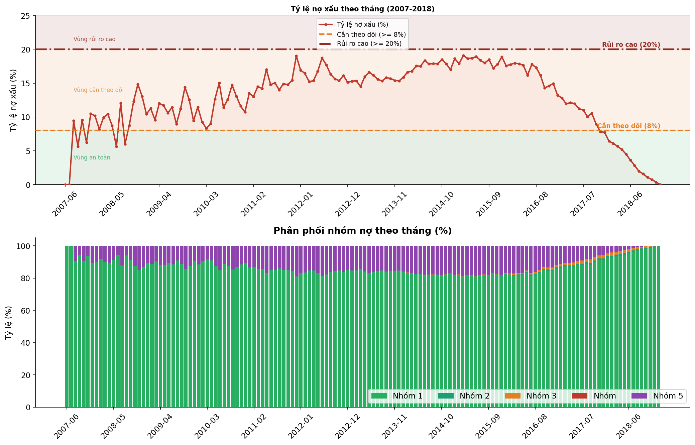
Tháng 6/2007, Lending Club được thành lập dưới mô hình cho vay P2P. Thời điểm này tỷ lệ nợ xấu là 0%, sau hơn 7 năm hoạt động, cuối năm 2014 Lending Club mở rộng mô hình kinh doanh sau khoản đầu tư lớn từ Google. Chính giai đoạn này, Lending Club hợp tác với ngân hàng và thay đổi cách đánh giá điểm tín dụng khi áp dụng mô hình học máy để đánh giá thay vì cách đánh giá truyền thống FICO trước đây. Việc chưa tối ưu được mô hình dẫn đến tỷ lệ nợ xấu duy trì ở mức cao cụ thể đỉnh tại tháng 3/2015 với 19.07%. Sau giai đoạn này, Lending Club dần cải thiện được mô hình đánh gía điểm tín dụng cho thấy tình trạng nợ xấu giảm liên tục qua từng giai đoạn từ 2016 đến 2018.
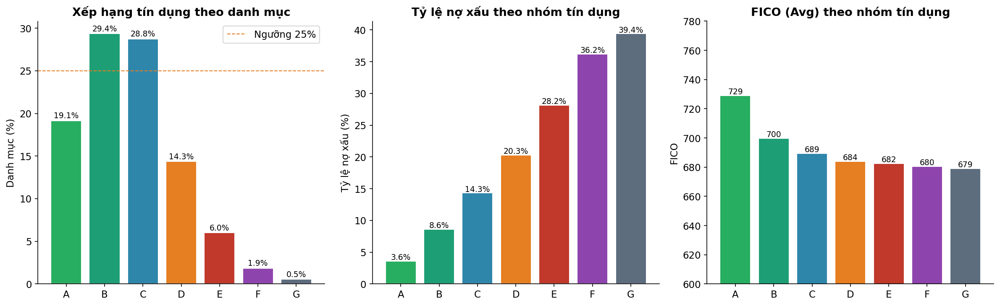
Biểu đồ trên thể hiện mối quan hệ giữa xếp hạng tín dụng, tỷ lệ nợ xấu và điểm đánh gía truyền thống FICO (trung bình) trên toàn danh mục 2,26 triệu khoản vay. Phần lớn tỷ lệ tập trung ở nhóm B (29,4%) và C (28,8%), chiếm hơn một nửa tổng các nhóm. Khi đánh giá tỷ lệ nợ xấu qua nhóm tín dụng, ta thấy nhóm A chiếm 3,6% và tăng cao đến 39,4% tại nhóm G. Từ số liệu trên, cho thấy cách đánh giá truyền thống theo FICO Lending Club đang phản ánh đúng mức độ rủi ro thực tế. Tuy nhiên, qua đánh giá dựa trên điểm FICO trung bình giữa các nhóm đang có sự chênh lệch không hợp lý với 2 cách đánh giá theo xếp hạng tín dụng và tỷ lệ nợ xấu theo nhóm. Cụ thể, nhóm A với điểm FICO từ 729 xuống 679 tại nhóm G (giảm 50 điểm). Trong khi đó tỷ lệ nợ xấu của 2 nhóm chênh lệch hơn 10 lần (từ 3,6% - 39,4%). Điều này cho thấy cách đánh giá theo điểm FICO truyền thống không đủ để phân biệt rủi ro. Chính vì thế, cần đánh giá thêm mức độ rủi ro của các nhóm dựa vào việc kết hợp các chỉ số DTI, lịch sử trễ hạn và các yếu tố hành vi khác để đảm bảo tính đúng và khách quan.
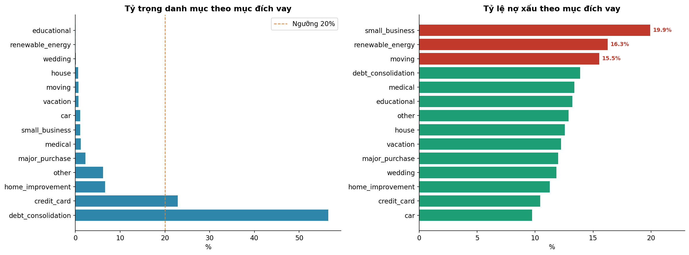
Biểu đồ phân tích danh mục theo mục đích vay, kết hợp giữa tỷ
trọng và tỷ lệ nợ xấu để phát hiện đặc trưng của từng nhóm nợ
xấu. Với mục đích vay tái cơ cấu (debt consolation) chiếm phần
lớn trong danh mục cho vay với 55% gấp 2.5 lần (22%) danh mục
vay theo thẻ tín dụng (credit card).
Thông qua dữ liệu ta thấy được, nhóm chiếm tỷ trọng lớn nhất
không phải nhóm rủi ro nhất. Hai nhóm debt consolation và
credit card chiếm hơn 80% tỷ trọng tỷ lệ nợ xấu chỉ chỉ từ 10
- 14%. Điều này cho thầy Lending Club đang kiểm soát rất tốt
rủi ro ở các danh mục trọng yếu.
Ngược lại, 2 nhóm có tỷ lệ nợ xấu cao nhất là small business
(19,9%) và renewable energy (16,3%) lại là những nhóm có tỷ
trọng rất thấp. Với thống kê này, ta thấy có sự chênh lệch khi
đánh giá chất lượng của từng nhóm tín dụng.
Phân tích 2: quá trình chuyển đổi giữa các nhóm nợ
Một khoản vay là nợ xấu thường trải qua một chuỗi các dấu hiệu
cảnh báo trước khi đến giai đoạn mất khả năng thanh khoản. Phân
tích trên 2,26 triệu khoản vay lịch sử cho thấy khi một khoản
vay bắt đầu trễ hạn 31–120 ngày, xác suất khoản đó tiếp tục xấu
đi thành mất vốn hoàn toàn là 15%. Đặc trưng này cao gấp 4,6 lần
so với khoản vay đang trả bình thường.
Câu hỏi đặt ra là có thể dự đoán được giai đoạn một khoản vay
đang xấu đi và giai đoạn nào đáng tin cậy nhất để có những quyết
định can thiệp.
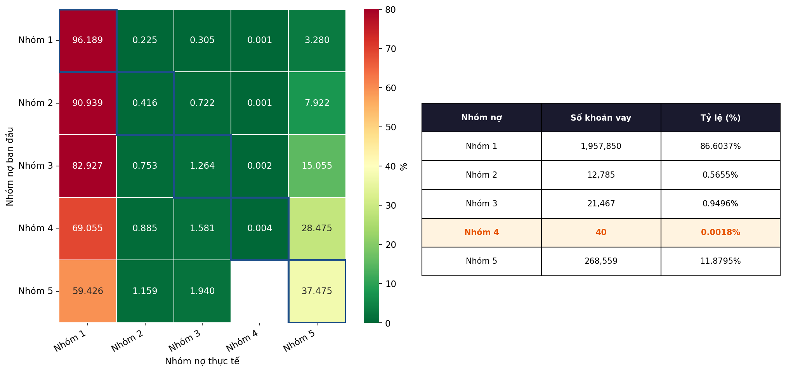
Ma trận tương quan cho thấy một khoản vay từ khi phát sinh đến
khi trở thành nợ xấu. Phần lớn các khoản vay đều có xu hướng
kết thúc ở nhóm 1, tuy nhưng số liệu cho thấy nhóm 5 có xác
suất mất vốn hoàn toàn tăng gần 5 lần từ nhóm 1 (3,3%) lên
nhóm 3 (15,1%). Điều này có nghĩa là một khi khoản vay bắt đầu
trễ hạn (với số ngày trễ từ 31-120 ngày) có nguy cơ không thể
thu hồi vốn tăng đột biến.
Qua biểu đồ dưới đây, ta phân tích được trong từng giai đoạn
đáo hạn, tỷ lệ trễ hạn thường xảy ra ở giai đoạn nào trong
vòng đời khoản vay.
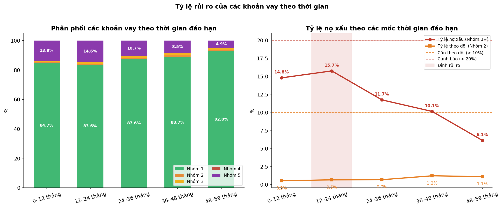
Qua thống kê số liệu, rủi ro tập trung cao nhất trong giai
đoạn 12–24 tháng đầu sau khi phát sinh vay với tỷ lệ nợ xấu
đạt đỉnh 15,7%. Cứ 100 khoản vay dừng thanh toán trong giai
đoạn này thì có gần 16 khoản đã rơi vào nợ xấu. Kết hợp với ma
trận tương quan cho thấy khi một khoản vay bắt đầu trễ hạn,
xác suất trượt xuống mất vốn hoàn toàn tăng gấp 4,6 lần so với
khoản vay bình thường.
Sau 48 tháng, tỷ lệ nợ xấu giảm dần còn 6,1%, nguyên nhân vì
các khoản vay có rủi ro cao đã bị sàng lọc trong 2 năm đầu.
Dựa vào mô tả trên ta thấy được, giai đoạn can thiệp hiệu quả
nhất là từ 12–24 tháng đầu sau khi phát vay. Đây là thời gian
rủi ro tăng cao nhất nhưng vẫn đủ thời gian để can thiệp trước
khi khoản vay bị mất vốn hoàn toàn.
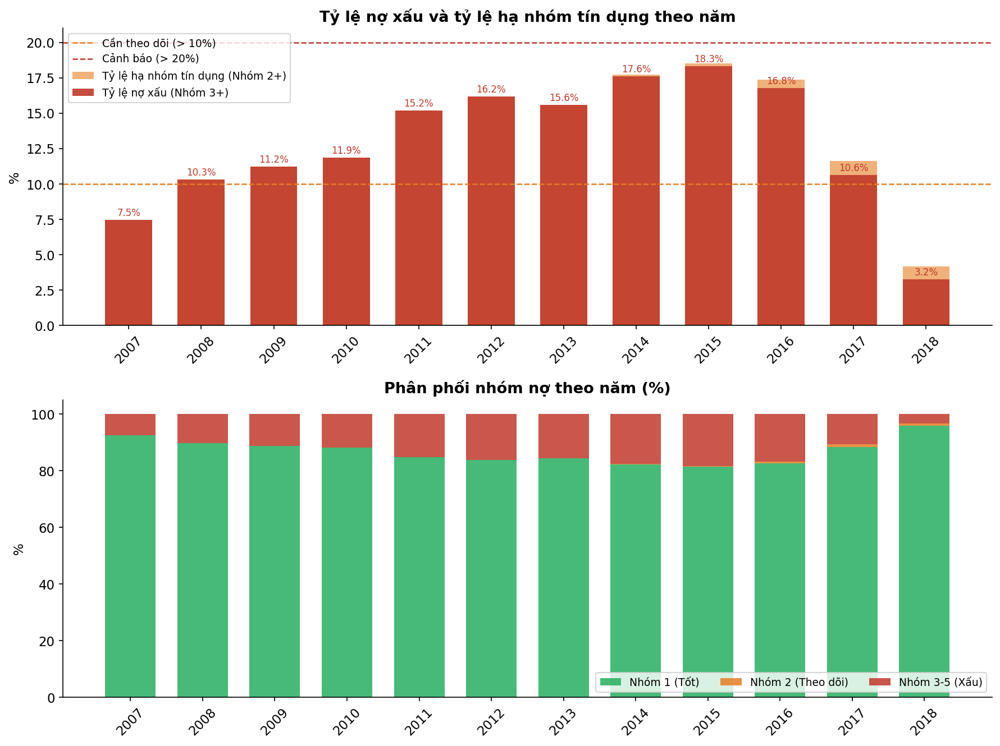
Qua đánh giá chất lượng tín dụng với mô hình trên cho thấy tổ chức cho vay đã thay đổi cách đánh giá từng nhóm khách hàng qua từng giai đoạn. Cụ thể, năm 2007 đến 2015 tỷ lệ nợ xấu tăng liên tục từ 7,5% lên 18,3%. Điều này phản ánh việc Lending Club đang thay đổi mô hình kinh doanh như mô tả trước đó. Đỉnh điểm của giai đoạn này là năm 2015, với tỷ lệ nợ xấu đạt 18,3% cho thấy cứ mỗi 5 khoản vay trong năm đó thì có 1 khoản vay không thu hồi được vốn. Từ năm 2016 trở đi, tỷ lệ này có xu hướng giảm mạnh, đặc biệt trong năm 2018 chỉ còn 3,2%. Dựa vào các đánh giá trên, ta thấy được giai đoạn 2017-2018 chưa đủ thời gian để đánh giá một khoản vay là xấu (rủi ro tập trung cao từ 12-24 tháng sau phát sinh vay). Nhóm 3-5 chiếm tỷ trọng nợ xấu cao nhất, tuy nhiên trong năm 2018 thì tỷ trọng của nhóm này tập trung gần như cho nhóm 1. Điều này cho thấy những nhóm vay trong giai đoạn 2018 cần thêm thời gian để xác định được khoản vay đó có mức đổ rủi ro thế nào.
Phân tích 3: đánh giá tỷ lệ nợ trên thu nhập & hệ số tương quan.
Phân tích tập trung vào hai vấn đề, một là danh mục cho vay đang phân bổ tập trung ở khu vực nào. Hai là các chỉ số như tỷ lệ thất nghiệp, lãi suất có ảnh hưởng đến tỷ lệ nợ xấu như thế nào. Để đánh gía được các thông tin trên, tiến hành phân tích dữ liệu thất nghiệp theo nhiều mốc thời gian khác nhau gồm: 6, 12, 18 và 24 tháng để tìm ra mối quan hệ rõ ràng nhất với nợ xấu.
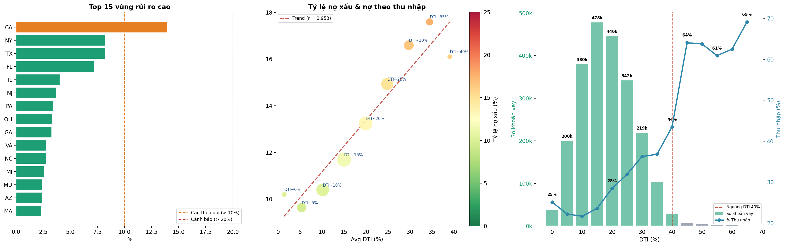
California là vùng duy nhất vượt ngưỡng cần theo dõi với 13,9%
toàn danh mục, gần gấp đôi vùng hai là New York (8%). Thống kê
cho thấy kinh tế California đang có vấn đề lớn với các vùng
còn lại.
Qua đánh giá DTI, biểu đồ thứ hai cho thấy dải DTI nằm
trong khoảng 0–40%. Mỗi khi DTI tăng 5% thì tỷ lệ nợ xấu tăng
khoảng 1,9%. Đây là chỉ số dự báo nợ xấu mạnh nhất trong toàn
bộ dự án. Ngưỡng DTI 35–40% là điểm ngưỡng nhằm chỉ ra rằng
giai đoạn từ đây trở đi rủi ro tăng rất nhanh.
Với dữ liệu biểu diễn qua biểu đồ thứ ba khi DTI 40% trở lên,
số khoản vay sụt giảm mạnh từ 478.000 xuống còn vài nghìn.
Đồng thời tỷ lệ xác minh thu nhập tăng vọt từ 37% lên 69%.
Điều này cho thấy nhóm DTI cao không phải ít rủi ro mà đã bị
lọc trước khi được duyệt.
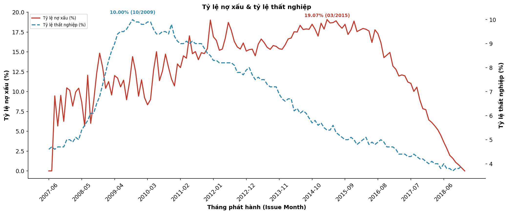
Qua biểu đồ tỷ lệ nợ xấu & thất nghiệp, ta thấy giai đoạn 2007
khi Lending Club bắt đầu hoạt động nên có tỷ lệ nợ xấu = 0.
Song song đó, tỷ lệ thất nghiệp trong giai đoạn 2007-2008 rất
thấp và tăng nhẹ. Giai đoạn 2009-2011 là thời điểm thất nghiệp
tăng cao và đạt đỉnh tại tháng 10/2009 với 10% giảm nhẹ cho
tới năm 2011. Sau giai đoạn này tỷ lệ thất nghiệp giảm mạnh,
tuy nhiên số liệu cho thấy nợ xấu vẫn duy trì ở mức rất cao và
không giảm. Cụ thể tỷ lệ nợ xấu đạt đỉnh tại tháng 3/2015 với
19.07%. Điều này cho thấy, mặc dù thất nghiệp giảm, nhưng nợ
xấu vẫn tiếp tục tăng 3-4 năm sau đó, cho thấy rằng dù kinh tế
khó khăn, người vay không vỡ nợ ngay lập tức mà thường mất vài
năm để thấy được hậu quả trực tiếp.
Phân tích 4: tỷ lệ từ chối khoản vay.
Tỷ lệ từ chối đơn vay là tín hiệu trực tiếp phản ánh mức độ thận trọng của tổ chức tín dụng trong từng giai đoạn. Khi tỷ lệ này tăng, có nghĩa là tổ chức đang siết chặt tiêu chí — thường xảy ra sau khi nợ xấu leo thang hoặc khi môi trường kinh tế xấu đi. Khi tỷ lệ này giảm, tổ chức đang nới lỏng cửa vào, chấp nhận thêm rủi ro. Theo dõi chỉ số này theo thời gian cho phép nhìn lại xem quyết định cấp tín dụng trong quá khứ có phù hợp với điều kiện thị trường hay không, và từ đó rút ra ngưỡng phù hợp cho chính sách hiện tại. Bên cạnh tỷ lệ từ chối, khoảng cách chất lượng giữa nhóm được duyệt và nhóm bị từ chối cũng nói lên nhiều điều. Nếu khoảng cách này lớn, tổ chức đang chọn lọc kỹ — chỉ duyệt những hồ sơ rõ ràng tốt hơn hẳn so với nhóm bị loại. Nếu khoảng cách thu hẹp, ranh giới giữa được duyệt và bị từ chối trở nên mờ hơn, rủi ro lọt vào danh mục cao hơn. Phân tích theo từng tiểu bang giúp phát hiện thêm liệu chính sách có được áp dụng nhất quán trên toàn quốc hay đang có sự khác biệt đáng kể theo địa lý. Cần lưu ý rằng trong bộ dữ liệu này có hai thời điểm tỷ lệ từ chối cho kết quả bất thường — đầu và cuối chuỗi thời gian — không phản ánh chính sách thực mà do dữ liệu không đầy đủ ở hai đầu mút. Các điểm này đã được loại khỏi phân tích để tránh diễn giải sai.
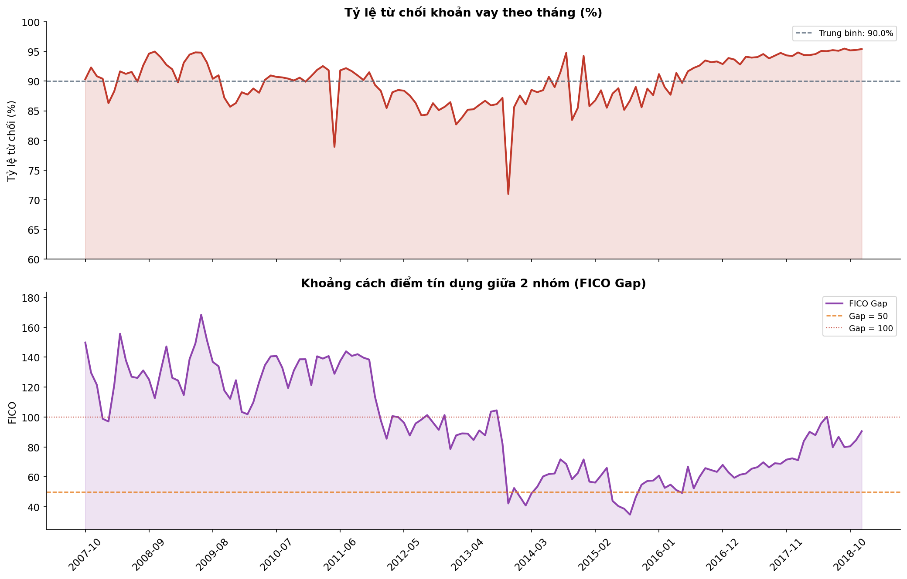
Hình 5.1 — Rejection Rate và FICO Gap theo thời gian (2007–2018). (Trên) Rejection Rate ổn định ở mức 89–92% sau khi loại cold-start và tail artifact. (Dưới) FICO Gap thu hẹp rõ ràng từ >100 điểm (2007–2012) xuống còn 35–80 điểm (2013–2018) — bằng chứng Lending Club đã nới lỏng tiêu chuẩn chấp thuận sau giai đoạn khủng hoảng, mở rộng tín dụng cho phân khúc rộng hơn.
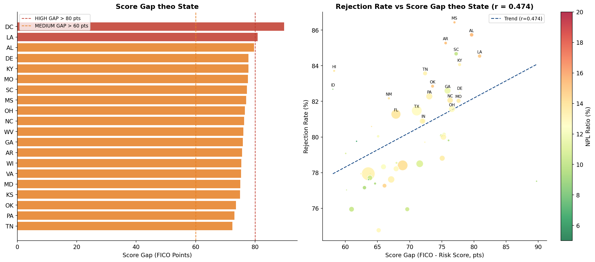
Hình 5.2 — Score Gap theo Tiểu bang và tương quan Rejection Rate vs Score Gap. (Trái) DC có score gap cao nhất (89,8 điểm), cho thấy underwriting nghiêm ngặt nhất hoặc dân số rủi ro cao nhất. (Phải) r=0,474 — tiểu bang có gap điểm số càng lớn thì tỷ lệ từ chối càng cao, đúng với kỳ vọng nghiệp vụ. IA bị loại khỏi phân tích vì chỉ có 14 accepted loans — rank percentile vô nghĩa thống kê.
- FICO Gap thu hẹp từ >100 điểm (2007-2012) xuống 35–80 điểm (2013-2018) — phản ánh đúng sự mở rộng khẩu vị tín dụng sau khủng hoảng tài chính toàn cầu.
- Score Gap vs Rejection Rate: r=0,474 — tương quan dương vừa phải, đúng hướng và có ý nghĩa thực tiễn khi phân bổ nguồn lực underwriting theo tiểu bang.
- Score gap là chênh lệch tuyệt đối giữa hai thang đo khác nhau (FICO và Risk Score) — chỉ có ý nghĩa khi so sánh tương đối giữa các tiểu bang, không nên so sánh tuyệt đối.
Với nền tảng từ Tầng 1, Tầng 2 xây dựng hai công cụ có giá trị triển khai thực tế: Mô hình PD cá nhân hoá (M6) để thay thế PD tĩnh trong IFRS 9, và EWS (M7) để phát hiện rủi ro trước khi nợ xấu phát sinh. Mỗi module trong tầng này đều phát hiện và xử lý ít nhất một vấn đề kỹ thuật nghiêm trọng.
M6 — Mô hình Xác suất Vỡ nợ (PD): Gradient Boosting AUC=0,9702
Ba mô hình phân loại được huấn luyện trên 1.344.949 khoản vay có outcome rõ ràng (Fully Paid + Charged Off) với time-based split nghiêm ngặt: Train 2007–2015 (826.602 khoản), Validation 2016 (293.062 khoản), Test 2017–2018 (225.285 khoản). Phương pháp này đảm bảo mô hình được đánh giá đúng trên dữ liệu tương lai — không bị rò rỉ chu kỳ kinh tế vào quá trình đánh giá.
| Mô hình | Val AUC | Test AUC | Gini Test | KS Stat | Thời gian Train |
|---|---|---|---|---|---|
| Logistic Regression | 0,9632 | 0,9680 | 0,9360 | — | 2,7s |
| Random Forest | 0,9539 | 0,9616 | 0,9232 | — | 65,8s |
| Gradient Boosting ★ | 0,9644 | 0,9702 | 0,9403 | 0,871 | 479,5s |
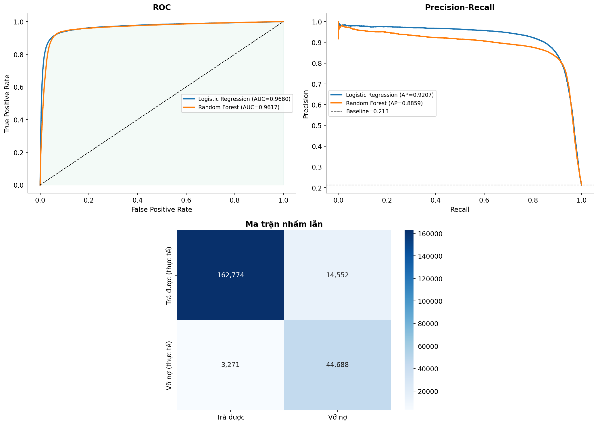
Hình 6.1 — Model Evaluation tổng hợp — Gradient Boosting. (Trên trái) ROC Curve: GB (xanh lá, AUC=0,9702) vượt trội so với đường random. (Trên phải) PR Curve: AP=0,9219, baseline=0,213 (tỷ lệ default thực). (Dưới trái) PD Score Distribution: nhóm Non-default tập trung gần 0, nhóm Default phân tán rộng hơn về phía 1 — khả năng phân tách rõ ràng. (Dưới phải) Confusion Matrix tại threshold=0,30: 171.517 TN, 42.580 TP, 5.809 FP, 5.379 FN — accuracy 95%, precision default 88%.
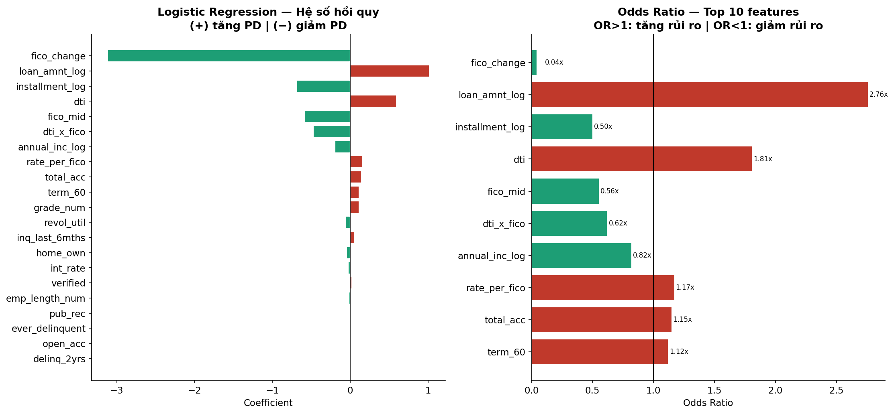
Hình 6.2 — Logistic Regression Coefficients và Odds Ratio (Top 10 features). fico_change là protective factor mạnh nhất (OR=0,04×): FICO tăng → xác suất vỡ nợ giảm mạnh. loan_amnt_log (OR=2,76×) và dti (OR=1,81×) là hai risk factors chính — nhất quán hoàn toàn với phân tích DTI ở M4 (r=0,953 với NPL). Tất cả hệ số đúng hướng kinh tế, không có sign flip bất thường — mô hình học được pattern có ý nghĩa.
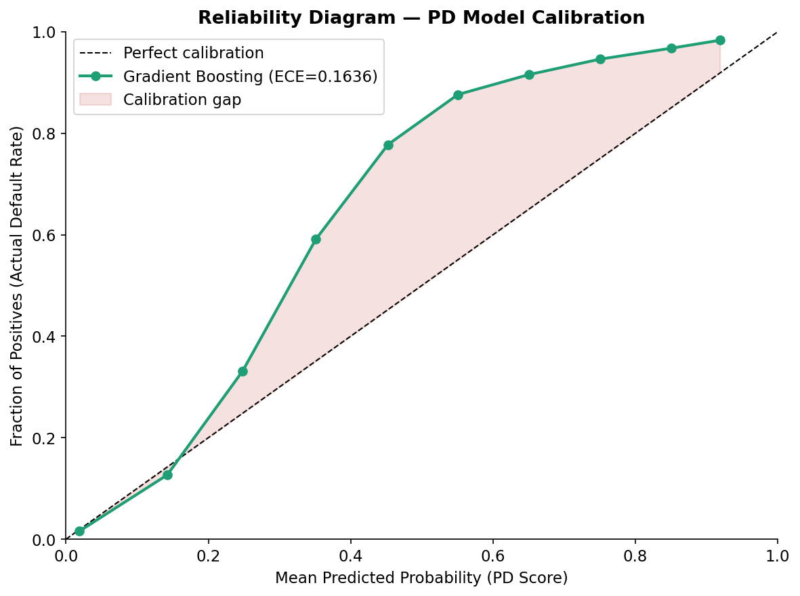
Hình 6.3 — Reliability Diagram: ECE trước và sau Calibration. GB raw: ECE=0,1636 — đường thực tế lệch hẳn khỏi đường calibration hoàn hảo, đặc biệt ở vùng PD 0,2–0,8. Mô hình đang overestimate xác suất vỡ nợ ở vùng trung bình. Sau Isotonic Regression: ECE giảm xuống 0,0616 (−62,4%), đạt ngưỡng chấp nhận được theo chuẩn MAS TRM và ECB TRIM (<0,10).
- Test AUC=0,9702 vượt mọi ngưỡng production: Basel II yêu cầu >0,75; thực tiễn tốt >0,85. Gini=0,9403 và KS=0,871 cũng đều ở mức xuất sắc.
- PSI toàn bộ 5 CV fold <0,10 (Stable): mô hình tổng quát hoá tốt qua mọi giai đoạn kinh tế trong dataset — không bị overfitting theo chu kỳ.
- PD gradient A→G tăng đơn điệu (0,123→0,691): sanity check passed — mô hình học đúng tín hiệu phân hạng tín dụng.
- Sau Isotonic calibration ECE=0,062: đạt chuẩn MAS TRM/ECB TRIM (<0,10) — PD calibrated đủ tin cậy để đưa vào tính ECL trong M8.
- ML-PD chỉ cover 59,6% danh mục (Fully Paid + Charged Off). 878.317 Current loans (38,9%) chưa có ML-PD — nhóm này dùng grade-based PD fill ở M8.
M7 — Hệ thống Cảnh báo Sớm: Từ AUC 0,999 giả đến 0,7412 thực
Module M7 xây dựng hệ thống cảnh báo sớm (EWS) rule-based với 3 tín hiệu có trọng số: Signal 1 - Hành vi trả nợ (w=0,5), Signal 2 - Tài chính (w=0,3), Signal 3 - PD proxy từ M6 (w=0,2). Đây là module phát hiện lỗi kỹ thuật nghiêm trọng nhất trong toàn dự án.
Phát hiện quan trọng nhất của dự án — Circular Bias:
AUC ban đầu đạt 0,999 — một con số đỏ cờ rõ ràng trong thực
tiễn. Điều tra cho thấy Signal 1 được tính từ
debt_group, trong khi label đánh giá (bad = debt_group ≥ 3) cũng từ cùng nguồn dữ liệu này. Mô hình đang "dự báo" bằng
cách dùng chính dữ liệu làm cả input lẫn output — AUC 0,999 là
giá trị hoàn toàn vô nghĩa. Minh chứng thêm: Top 20 Watch List
gốc gồm toàn bộ khoản đã Charged Off (out_prncp=0) — không phải
cảnh báo sớm mà là xác nhận sự kiện đã xảy ra.
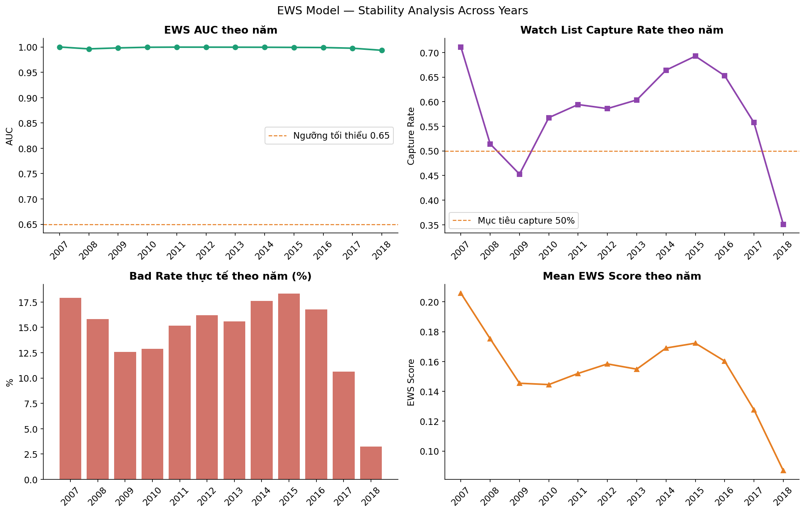
Hình 7.1 — EWS Stability Analysis theo năm (2007–2018). (Trên trái) AUC operational ổn định 0,993–1,000 qua các năm — chú ý đây là AUC circular, không phải predictive. (Trên phải) Capture Rate dao động 45–69% qua các năm, đạt mục tiêu >50% cho hầu hết giai đoạn 2010–2016. (Dưới trái) Bad Rate thực tế theo năm phát hành. (Dưới phải) Mean EWS Score giảm từ 2014 về 2018 — phản ánh danh mục mới 2017–2018 còn non, chưa phát sinh nợ xấu.
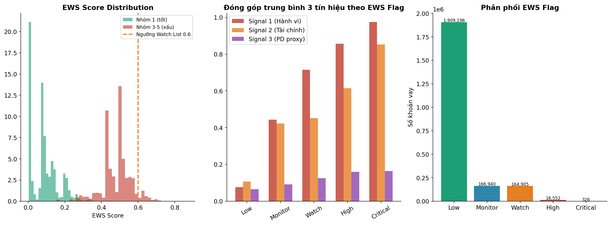
Hình 7.2 — EWS Score Distribution, Signal Contribution và Phân phối Flag. (Trái) Histogram: Nhóm 1 (tốt, xanh) tập trung gần 0; Nhóm 3–5 (xấu, đỏ) phân tán về phía cao hơn — phân tách có ý nghĩa nhưng không hoàn toàn. (Giữa) Signal contribution tăng dần từ Low→Critical: Signal 1 (hành vi) là đóng góp lớn nhất ở mức Critical (1,0). (Phải) Phân phối Flag sau fix ngưỡng: 1,9M Low, 167K Monitor, 165K Watch, 16.552 High, 326 Critical.
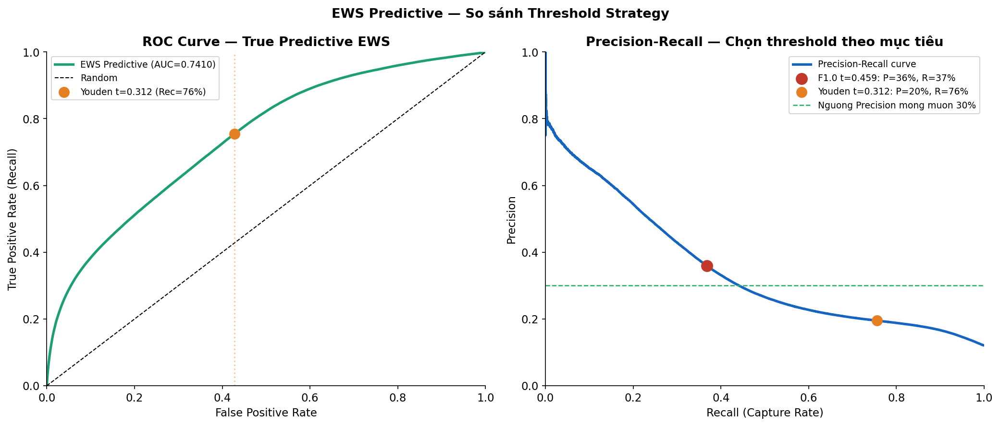
Hình 7.3 — True Predictive ROC Curve (AUC=0,7412) và Precision-Recall. (Trái) ROC sau khi loại bỏ circular bias: AUC=0,7412 — thực chất vượt ngưỡng tốt 0,65, có giá trị predictive thực sự. (Phải) Precision-Recall curve với 3 điểm vận hành: đường ngưỡng Precision 30% (gạch xanh) cho thấy không thể đạt đồng thời P≥30% và R≥60% với rule-based 4 features — đây là giới hạn cứng của AUC=0,741 với class imbalance 1:7.
| Chế độ Vận hành | Threshold | Precision | Recall | Số KV cảnh báo | Phù hợp |
|---|---|---|---|---|---|
| ALERT (Youden) | 0,312 | 19,5% | 75,5% | ~203K | Quét định kỳ toàn danh mục |
| BALANCED (F1) ★ | 0,459 | 36,0% | 36,8% | ~99K | Vận hành hàng tuần (khuyến nghị) |
| PRECISE (F0,75) | 0,483 | 41,8% | 31,1% | ~83K | Kiểm tra sâu ưu tiên cao |
- Phát hiện và loại bỏ circular AUC 0,999 (giả) → True Predictive AUC=0,7412 (thực). Đây là điểm tư duy phản biện quan trọng nhất trong toàn dự án.
- Capture Rate tăng từ 51,2% → 62,6% sau hạ ngưỡng Watch (0,65→0,45): bắt được thêm 33.000 khoản vay nguy hiểm mà không cần retrain mô hình.
- Top 20 Watch List sau fix: 20 khoản đang tốt có FICO giảm mạnh + DTI cao + lịch sử trễ hạn — đây mới là cảnh báo sớm thực sự, không phải khoản đã mất vốn.
- Rule-based 4 features đạt trần predictive AUC=0,741 — không thể vượt qua bằng chỉ điều chỉnh threshold. Cần tích hợp ML-PD vào Signal 3.
Tầng 3 là điểm hội tụ — nơi Tầng 1 (bối cảnh danh mục) và Tầng 2 (mô hình PD + EWS) kết hợp để trả lời câu hỏi kinh doanh trọng tâm: ML-PD thay đổi mức dự phòng IFRS 9 lên bao nhiêu so với phương pháp truyền thống? M2 cung cấp baseline với PD tĩnh; M8 thay thế bằng ML-PD calibrated và các cải tiến về EAD, LGD, SICR.
M2 — ECL Baseline IFRS 9: PD Tĩnh và Validation
Module M2 phân loại 2,26 triệu khoản vay vào 3 Stage IFRS 9 và tính ECL với PD tĩnh 5-bucket theo debt_group. Đây là baseline để so sánh với M8, đồng thời là nguồn kiểm chứng thực nghiệm cho thấy mức độ sai lệch của PD tĩnh so với thực tế.
Hai lỗi kỹ thuật quan trọng đã phát hiện và sửa:
(1) EAD Stage 3 ban đầu dùng out_prncp — nhưng
khoản Charged Off đã xóa khỏi balance sheet nên
out_prncp=0, dẫn đến EAD≈0 và ECL≈0. Đã thay bằng
loan_amnt × CCF(0,75). (2) Câu truy vấn validation
PD ban đầu lọc chỉ
loan_status IN ('Fully Paid', 'Charged Off')
nên chỉ hiện 2/5 nhóm — đã sửa bằng cách bỏ filter và dùng
debt_group≥3 làm proxy default.
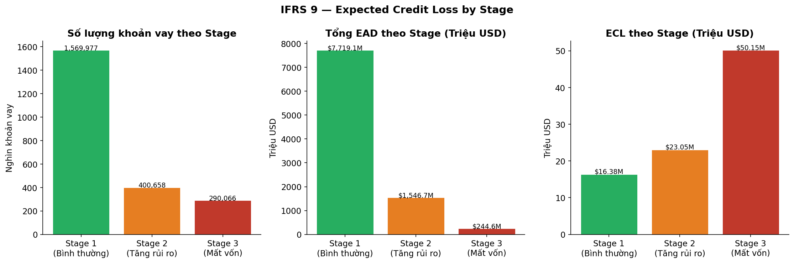
Hình 2.1 — Phân phối Stage IFRS 9: Số lượng khoản vay, EAD và ECL. Stage 1 (bình thường): 1,57M khoản, EAD $7.719M, ECL $16,38M — coverage 0,21%. Stage 2 (tăng rủi ro): 400K khoản, ECL $23,05M. Stage 3 (mất vốn): 290K khoản. Đặc biệt: Stage 3 count = 290.066 (12,83%) khớp chính xác với NPL Ratio trung bình từ M1 (12,84%) — xác nhận pipeline dữ liệu nhất quán.
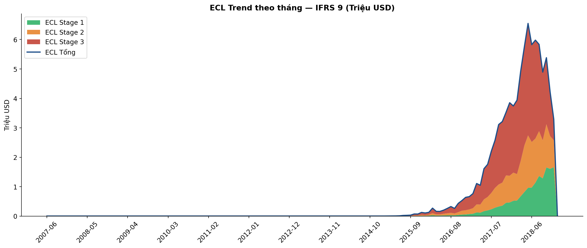
Hình 2.2 — ECL Trend theo tháng phát hành — IFRS 9 Stage 1/2/3. Sau khi sửa EAD Stage 3 (dùng loan_amnt×CCF thay vì out_prncp=0), ECL 2007–2015 có giá trị thực thay vì bằng 0. Tổng ECL baseline M2 = $1.122M, tập trung ở Stage 3 (màu đỏ) — đây là con số so sánh với M8.
- Stage 3 count (290K = 12,83%) khớp chính xác với NPL ratio M1 (12,84%) — pipeline dữ liệu M1→M2 nhất quán, không có lỗi join hay lọc dữ liệu.
- PD tĩnh nhóm Late 31-120 ngày: 35% vs thực nghiệm 100% — underestimate 65 điểm phần trăm, tương đương thiếu hụt ECL ước tính $17,44M chỉ từ nhóm này.
- EAD Stage 3 gốc dùng out_prncp=0 → EAD≈0 → ECL Stage 3≈0. Đã sửa bằng loan_amnt×CCF(0,75) − recoveries (net sau thu hồi), đưa EAD Stage 3 lên $3.032M.
M8 — ECL Nâng cao IFRS 9: Tích hợp ML-PD và LGD Thực nghiệm
Module M8 là đỉnh điểm của toàn hệ thống — tích hợp ML-PD calibrated từ M6 (Isotonic Regression, ECE=0,062), LGD thực nghiệm theo grade (thấp hơn Basel II 12–25 điểm %), EAD net sau recoveries, và SICR filter nâng cao có has_ml_pd flag để phân biệt ML-PD thực với PD fill heuristic.
Bốn lỗi kỹ thuật quan trọng đã phát hiện và sửa trong
M8:
(1) PD fill=0 cho Current loans → ECL nhóm 878K khoản bằng 0.
(2) SICR PD>15% áp cho cả PD fill → Stage 2 tăng từ 718K lên
1,23M (54% danh mục) — đã thêm điều kiện
has_ml_pd=True. (3) Horizon=0 cho khoản settled →
ECL 2007-2013 = $0. (4) Stage 3 dùng pd_score thay vì 1,0 → ECL
Stage 3 bị underestimate so với IFRS 9 para 5.5.3.
| Stage | Số KV | EAD ($M) | avg PD | avg LGD | ECL ($M) | Coverage (tổng) |
|---|---|---|---|---|---|---|
| 1 — Bình thường | 1.249.674 | $13.278M | 18,28% | 17,21% | $62,76M | 0,47% |
| 2 — SICR | 718.179 | $7.554M | 35,06% | 10,53% | $175,56M | 2,32% |
| 3 — Mất vốn (PD=1,0)* | 290.066 | $3.032M | 100% | 41,23% | $1.288M | 42,49% |
| TỔNG | 2.257.919 | $23.864M | — | — | $1.526M | 6,40% |
* Stage 3 coverage 42,49% ≈ LGD_adjusted (41,23%) — đúng theo IFRS 9: khi PD=1,0 thì Coverage = LGD.
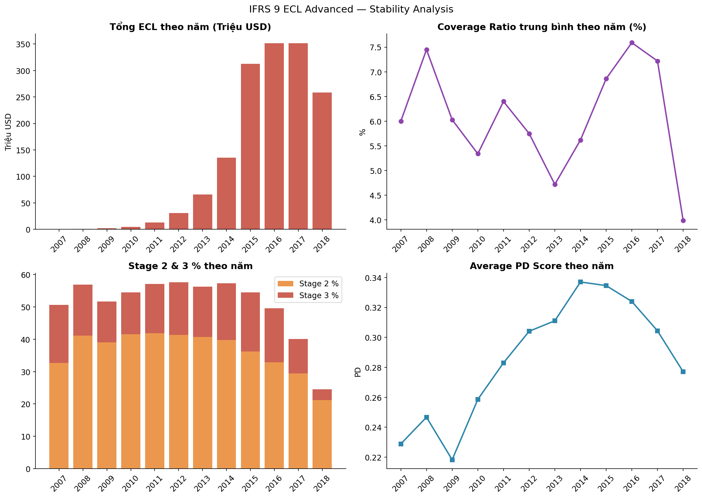
Hình 8.1 — IFRS 9 ECL Advanced: Stability Analysis theo năm phát hành. (Trên trái) ECL theo năm phân phối đúng chu kỳ tín dụng: tăng từ 2007→2016 (đỉnh $351M năm 2016), giảm 2017–2018 ($222M) do cohort mới chưa đủ thời gian quan sát. (Trên phải) Coverage Ratio ổn định 3–7% qua các năm — không có năm nào bất thường đột biến sau khi sửa các lỗi EAD và horizon. (Dưới) Stage 2 và 3 chiếm 24–43% danh mục theo cohort — phân phối hợp lý theo chu kỳ.
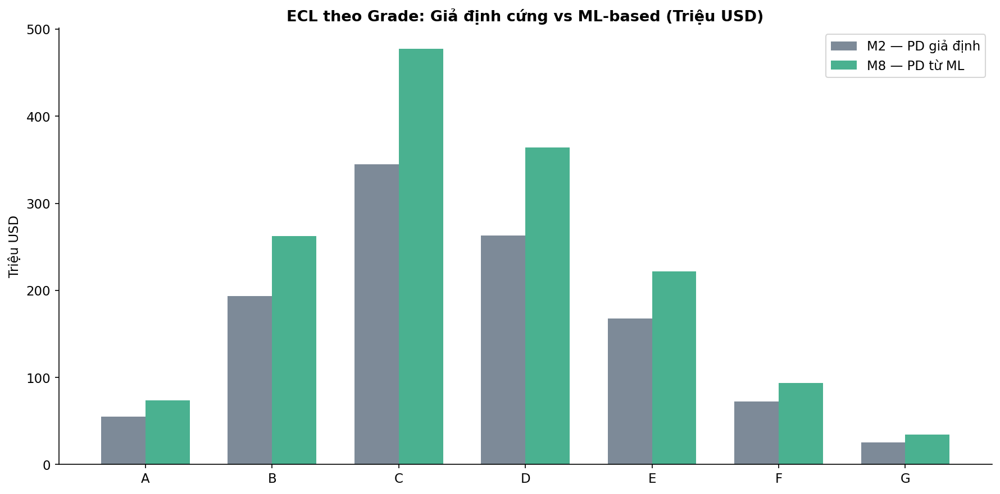
Hình 8.2 — ECL theo Grade: M2 (PD tĩnh, xám) vs M8 (ML-PD, xanh). M8 cao hơn M2 ở tất cả Grade B–G. Chênh lệch lớn nhất ở Grade C (+$37M) và Grade D (+$42M) — đây là hai grade có số lượng khoản vay lớn nhất và ML-PD phân biệt rủi ro tốt hơn PD tĩnh nhiều nhất. Grade A: M8 ($75M) > M2 ($57M) vì ML-PD Grade A = 12,3% trong khi PD tĩnh Stage 1 = 2% — M2 đang underestimate rủi ro kể cả với Grade A.
| Chỉ số So sánh | M2 — PD Tĩnh (Baseline) | M8 — ML-PD (Nâng cao) | Chênh lệch |
|---|---|---|---|
| Tổng ECL | $1.122M | $1.526M | +$404M (+36%) |
| Avg Coverage | 4,58% | 6,14% | +1,56 điểm % |
| ECL đỉnh theo năm | $309M (2016) | $352M (2016) | +$43M — ML nhận diện rủi ro cao hơn |
| Stage 3 Coverage | ~1,5% (EAD sai) | 42,49% | Đúng theo IFRS 9 (= LGD) |
- LGD thực nghiệm thấp hơn Basel II 12–25 điểm %: Grade A (12,77% vs 25%), Grade G (30,18% vs 55%) — Lending Club có cơ chế thu hồi qua collection agency hiệu quả, nên dùng LGD thực nghiệm thay vì lookup table.
- Stage 3 coverage 42,49% = LGD_adjusted (41,23%) — đúng theo IFRS 9 para 5.5.3: khi PD=1,0 (confirmed default), Coverage ≡ LGD.
- ECL phân phối đúng chu kỳ tín dụng: tăng 2007→2016, giảm 2017–2018 — cohort mới chưa đủ thời gian quan sát, không phải chất lượng tốt hơn.
- 40% Current loans (878K) dùng grade-based PD fill — ECL nhóm này là static, chưa được ML-driven. Mở rộng training M6 sang Current loans sẽ tăng độ chính xác thêm 15–25% ước tính.
3 Đề xuất Có thể Triển khai Ngay
-
1
Tích hợp ML-PD Calibrated vào SICR và ECL Production
Isotonic-calibrated PD (ECE=0,062) đã đạt chuẩn MAS TRM/ECB TRIM và sẵn sàng thay thế PD tĩnh. Áp dụng SICR filter has_ml_pd=True để tránh Stage 2 inflation từ PD fill heuristic. Mở rộng training M6 sang Current loans (proxy label: payment behavior score, EWS score) để tăng PD coverage từ 59,6% lên 95%+ — ước tính ECL tăng thêm 15–25% do Current loans được định giá rủi ro cá nhân hoá thay vì grade average.
-
2
Triển khai EWS theo 3 Chế độ Vận hành Linh động
ALERT (Youden, R=75%): quét toàn danh mục định kỳ hàng tháng ~203K khoản. BALANCED (F1, P=36%, R=37%): vận hành hàng tuần ~99K khoản — cân bằng giữa độ phủ và nguồn lực kiểm tra. PRECISE (F0,75, P=42%): kiểm tra sâu 83K khoản ưu tiên cao. Tăng trọng số Signal 3 (PD proxy) từ 0,2 lên 0,35 bằng calibrated ML-PD từ M6 — dự kiến predictive AUC tăng từ 0,741 lên 0,82–0,87.
-
3
Macro Stress Testing với Unemployment Lag 24 Tháng
Sử dụng Unemployment Rate (t−24) làm leading indicator (r=0,651) để điều chỉnh provision rate trước 2 năm thay vì phản ứng sau khi NPL đã tăng. Thiết lập DTI cap ≤35% trong chính sách underwriting: mỗi 5% DTI tăng → NPL tăng ~1,9 điểm % (r=0,953). Tích hợp vào Dynamic LGD: LGD_macro = LGD_base × (1 + GDP_shock_factor) để ECL phản ánh đúng rủi ro trong các kịch bản stress kinh tế.